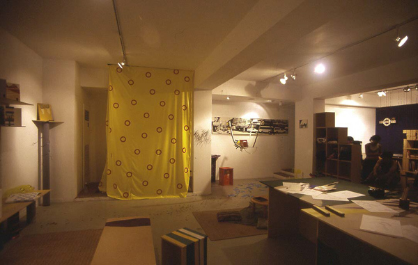
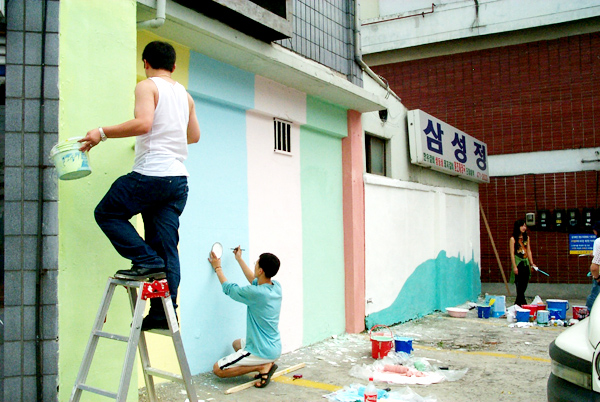

|

전 시 개 요
안양시 석수시장 골목 안에 위치한 보충대리공간 스톤 앤 워터가 7월 5일부터 8월 2일까지 한 달 동안 작가들의 작업실로 탈바꿈한다.
이름하여 '웰컴 투 작업실' 이다.
새로운희망, 상상도서관에 이어 2003년 스톤 앤 워터 전시지원공모선정展 세 번째로 마련된'웰컴 투 작업실'은 서로 다른 지역에서 상이한 작업을 해오던 13명의 작가들이 만든 공개된 공동작업실이다. 전시공간에 연출된 작업실에서 작가들은 페인팅, 설치, 사진, 애니메이션 등의 개인 작업을 선보이고 방문한 관객들과 함께 작업을 진행시켜나가며 전시를 보충시켜나간다.
전시공간을 작가들의 작업실로 꾸미면서 작업실은 관객과 작품이 소통하는 장소가 된다. 즉, '웰컴 투 작업실'展은 관람객-갤러리-작가로 연결되는 폐쇄 시스템에서 벗어나 관람객-작업실(=갤러리)-작가를 연결시켜 관객이 생활 속에서 예술을 대면할 수 있는 소통의 연결고리를 형성한다.
관람객들은 작업실에서 작업 중인 작가의 일상을 살펴보며 작가와 담소를 나누기도 하면서 그들이 준비한 이벤트와 공동작업에 참여할 수 있다. 관람객은 기존의 전시장에 비치된 결과물로써의 작품이 아니라 과정으로써의 작업을 목격하고 그 현장에 개입되어 작업의 증거물로 남게 되는 것이다.

전 시 내 용
연출된 공동작업실은 작가들이 직접 제작한 가구, 소품으로 구성하고 제작되어진 작품을 전시하며 한 달 여간의 기간동안 계속해서 작업을 진행시켜 나간다. 작업실에서 진행되어지는 작품은 관람객과의 교류를 바탕으로 해서 제작되어진다.
박소정은 릴레이 그림책 만들기를 관람객들의 참여를 통해 한달동안 진행시킨다. 원숭이 엉덩이는 빨개∼로 시작되는 동요의 노랫말을
관람객들이 릴레이로 이미지화해 보는 작업이다. 또한 버드나무라는 제목의 발을 제작해 미술작품을 생활공간에서 활용할 수 있게 하는 작업을 진행한다.
허민희는 예술과 생활의 경계를 굳이 구분하지 않는다. 자신의 엉덩이형태를 본떠 만든 엉덩이의자, 인형작품과 책꽂이 등으로 예술작품의 생활화를 시도한다.
이호동은 '언어에 자유를 찾아주자'라는 주제로 관객과 함께한 언어에 여러글을 담아내는 작업을 진행시키며 언어를 심는 나무(나무볼펜)을 제작한다.
만화집단 B.U.G는 다양한 사람들의 생각에 대하여 감정을 주제로 만화를 제작하였다. 전시기간동안에는 관객과의 만남을 통해 커리커쳐와 새로운 4컷만화를 제작한다.
박지영은 군것질과 쓰레기에 대한 출발로 새싹이 돋아난 쓰레기통을 제작한다.
이주복은 피상적인 부모와 자식간의 관계를 넘어서 실생활에서의 모습을 사진작업으로 표현한다.
이지은은 지루하게 반복되는 일상탈출을 픽토그램을 사용하여 표현한 <EXIT>와 정체성을 찾는 아이를 라인으로 작업한 <WHO IS HE?>라는 두가지 애니메이션 작업을 선보인다.
강세경은 자신이 생활하는 공간을 사실적인 유화작업으로 표현한다.
조영호는 오픈식날 '간, 사이' 라는 제목으로 의식하지 못했던 틈에서 자신에 대한 인식을 의도하는 퍼포먼스를 한다.
최병관은 다양한 드로잉 작업과 드로잉 노트를 전시한다.
이밖에도 웰컴투 작업실 작가들이 모두 참여해 한 달 동안 작업공간으로 쓸 석수동에 벽화프로젝트를 진행시킨다. 외부 벽화는 관악역에서부터 시작된 골목길 담에 그려져 스톤 앤 워터를 찾아오는 이들의 눈을 즐겁게 하는 장치임과 동시에 석수동 마을을 아름답게 꾸미는 역할을 한다.
|
 about us
about us